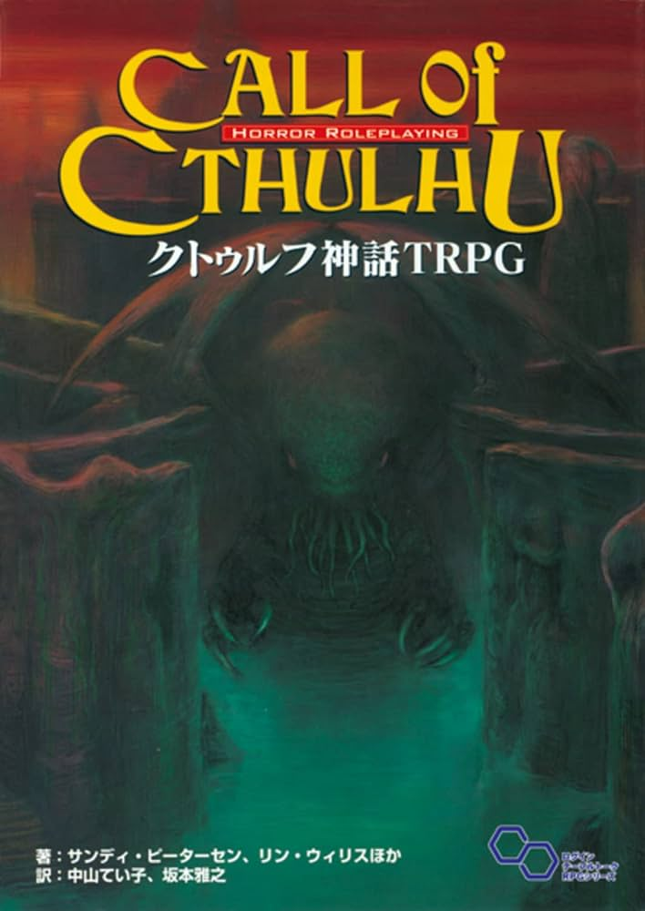

TRPGはテーブルトークロールプレイングゲーム（tabletalk Roll Playing Game）の略称。
定められたルールに従って与えられた役割を演じながら進めていくゲーム。口頭で行動を宣言してその結果の可否や影響度などはサイコロを使って運で決める。
大抵は物語の流れを知る進行役が一人と、内容を知らないプレイヤーを一人～四人で物語を紡いでいく。
幼稚な言い方で「大人のごっこ遊び」洒落た言い方で「遊びのあるエチュード」と言えます。
2025年の9月末にはTRPGの専門書店がオープンするなど近年にわかに盛り上がっているコンテンツです。
ここではTRPGを遊ぶために必要な用語とルールにあたるシステムを紹介していきます。
